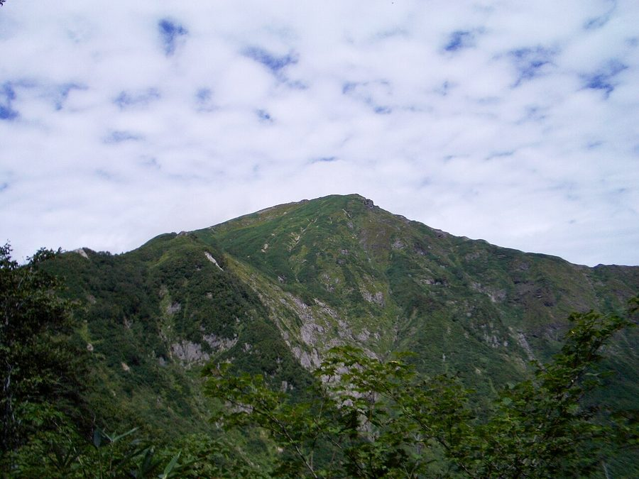
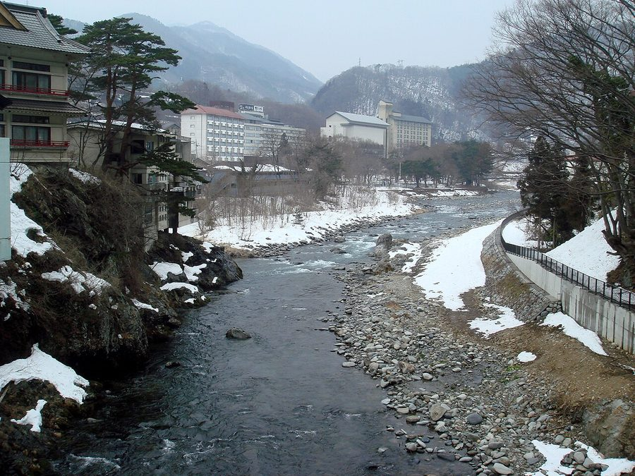
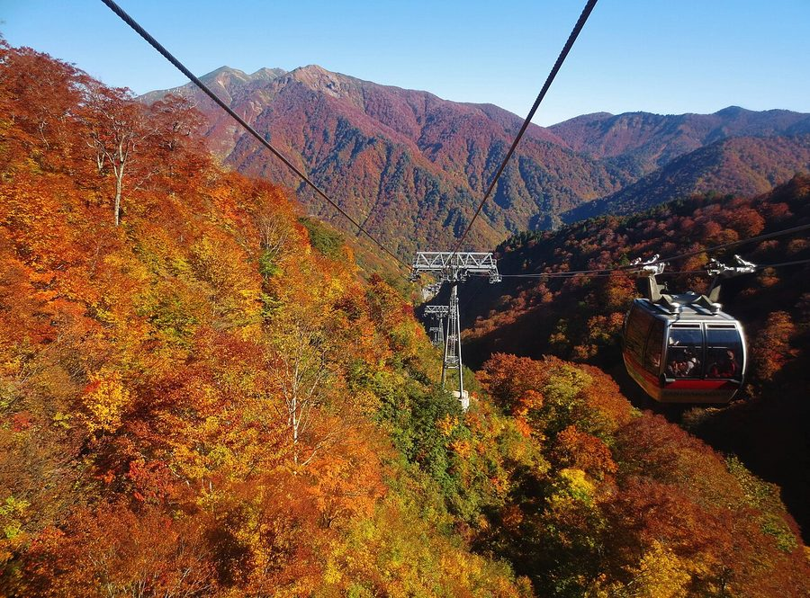
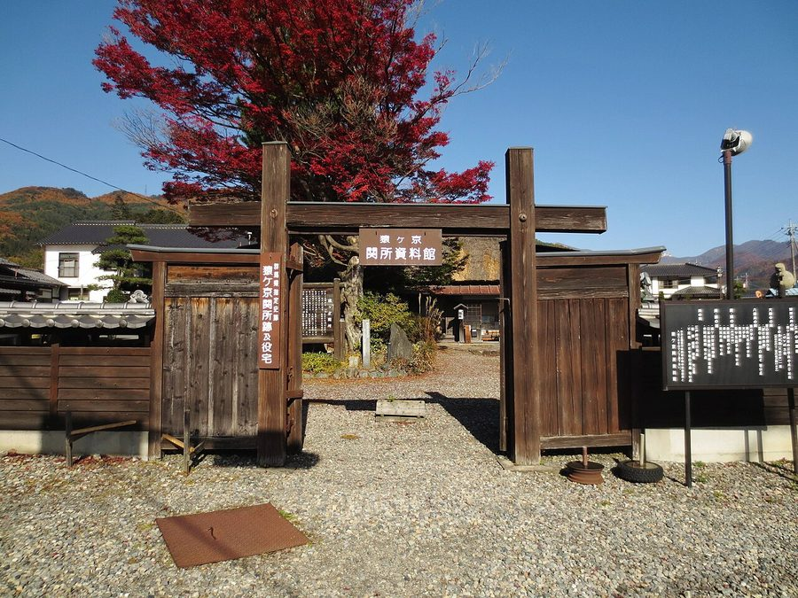

群馬県利根郡みなかみ町の日帰り温泉・銭湯・サウナ（67件）
寄り道スポット検索アプリ「ヨッテコ」の収録データから、群馬県利根郡みなかみ町の日帰り温泉・銭湯・サウナを営業時間・料金つきで一覧にしました（2026年8月時点）。
最も安いのは漣温泉 のぞみの湯（200円）。最も遅くまで入れるのは湯ノ小屋温泉 清流の宿たむら（24:00まで）。朝風呂なら猿ヶ京住民センター（6:30開店）。
群馬県利根郡みなかみ町はどんなまち？
数字で見る🔍群馬県利根郡みなかみ町
まちの横顔




- 地形と気候: 群馬県最北端に位置し、新潟県と上越国境で接します。中央分水嶺である三国山脈の南側に広がる町域（781.08平方キロメートル）は標高300メートルから2,000メートル台の山地で、大半が山林です。利根川の最上流にあたり、谷川岳の登山口があります。寒暖の差が大きく気温の年較差・日較差が大きい大陸性気候で、降雪量が多く豪雪地帯に指定されています。
- 観光: 群馬県内で最も広い面積を持つ町域には、水上温泉郷や猿ヶ京温泉など「みなかみ十八湯」と総称される温泉群があります。利根川源流部は自然環境保全地域（みなかみユネスコエコパーク）に指定されており、谷川岳の登山口もあります。
寄り道充実度（全国偏差値）
偏差値・順位は、ヨッテコ収録データ（2026年8月時点・26,033件）を市区町村別に集計した施設数の全国分布（1,728市区町村）から毎回算出しています。カードを押すとカテゴリ別の分析に切り替わります。
日帰り温泉から見た群馬県利根郡みなかみ町
町内の日帰り温泉は67件、全国13位タイ（上位0.8%）。——数のうえでは、はっきり湯の多いまち。
- 96%の店が天然温泉です。全国水準は67%です。水上温泉郷や猿ヶ京温泉など「みなかみ十八湯」と総称される温泉群を抱える町。沸かし湯ではなく源泉が前提で、温泉そのものがまちの資源になっています。
- 15%——サウナの併設率は、全国の52%に届きません。気温の年較差・日較差が大きい大陸性気候で、豪雪地帯に指定される町。サウナの有無で選ぶなら、先に確認しておきたい数字です。
- 夜遅くまで開いている店は12%にとどまります（全国40%）。谷川岳をはじめ標高2,000メートル級の山々に囲まれ、町域の大半を山林が占める町。夜の選択肢は限られるので、閉店時刻は先に見ておきたいところです。
- 入浴料（判明41件）の中央値は950円。全国（650円）より46%高めです。設備や湯の質を含めた、この土地の相場ということになります。
出典: 施設データ=ヨッテコ収録データ（26,033件・2026年8月時点）。偏差値・全国順位・全国水準は全1,728市区町村の分布から毎回算出。 / 人口=総務省「住民基本台帳に基づく人口、人口動態及び世帯数」（2026年1月1日現在） / 面積=国土地理院「全国都道府県市区町村別面積調」（2026年4月1日時点） / まちの解説=日本語版Wikipedia「みなかみ町」（https://ja.wikipedia.org/wiki/みなかみ町、2026年8月21日取得、revid 110490621、CC BY-SA 4.0）より作成 / 写真=Wikimedia Commons（各キャプションに作者・ライセンスを記載）
曜日別の営業施設数
| 月 | 火 | 水 | 木 | 金 | 土 | 日 |
|---|---|---|---|---|---|---|
| 65 | 63 | 63 | 63 | 67 | 67 | 67 |
火・水・木曜日が最も休みが多く（各4件が定休）、年中無休は59件です。※営業時間データのある67件で集計
入浴料金の分布（大人）
| 500円以下 | 6件 | |
| 501〜800円 | 11件 | |
| 801〜1,200円 | 14件 | |
| 1,201円以上 | 10件 |
料金が確認できた41件で集計。
施設一覧
| 施設 | 営業時間 | 料金（大人） |
|---|---|---|
| DOAI VILLAGE サウナ | 11:00〜17:00（水休） | 4,000円 |
| いたちの湯(手湯) 天然温泉 | 09:00〜18:00 | — |
| おやど松葉屋 天然温泉 おやど松葉屋（水上温泉） | 10:00〜20:00 | — |
| かけ流しの湯 大滝屋旅館 天然温泉 | 13:00〜15:00 | 1,000円 |
| きつねの湯(手湯) 天然温泉 | 09:00〜18:00 | — |
| さなざわ㞢テラス 天然温泉露天風呂サウナ 国内トップクラスのpH値を持つ高アルカリ泉。肌がつるつるになる美肌の湯で知られ、美しい棚田を眺めながら入浴。 | 12:00〜20:00 | 900円 |
| ちばむらオートキャンパーズリゾート かもしかの湯 ちばむらオートキャンパーズリゾート内の温泉施設「かもしかの湯」。かつて千葉市民に親しまれた高原千葉村温泉がリニューアル。… | 13:00〜17:00 | 1,000円 |
| まんてん星の湯 天然温泉露天風呂サウナ 石庭に囲まれた露天風呂「里の湯」と洋風の「七夕の湯」があり、赤谷湖を一望できる。貸切温泉やよもぎ蒸しも利用可能。 | 10:00〜20:00 ※曜日により異なる | 950円 |
| みなかみリバーサイドリゾート＆スパ ホテルロモサ 天然温泉 水上町唯一の源泉かけ流し温泉と異国情緒あふれるリゾート | 11:00〜15:00 | — |
| みなかみ温泉 天野屋 天然温泉 | 12:00〜20:00 | — |
| みなかみ町 ふれあい交流館 天然温泉 みなかみ町 ふれあい交流館 | 11:00〜20:30（火休） | 700円 |
| みなかみ町の日帰り温泉 鈴森の湯 天然温泉露天風呂 みなかみ町の日帰り温泉 鈴森の湯（源泉かけ流し） | 11:00〜20:00（水・木休） | 900円 |
| ゆじゅく金田屋 天然温泉 開湯1200年の湯宿温泉で、加水加温濾過循環なしの源泉100%かけ流し。美人泉質として知られ、肌がすべすべになる弱アルカ… | 15:00〜19:00（月・火休） | 660円 |
| ゆの宿 上越館 天然温泉露天風呂 水上温泉の旅館、うのせ温泉の源泉掛け流し。内湯2箇所と露天風呂1箇所。 | 12:00〜20:00 | — |
| ゆびその湯 天然温泉 | 09:00〜17:00 | — |
| ゆびそ温泉 天空の湯 なかや旅館 天然温泉露天風呂 湯檜曽温泉の源泉100%掛け流しを使った日帰り施設。露天風呂2つに内湯3種を備え、赤ちゃん向けの浅い専用浴槽も各所に設置… | 11:00〜20:00 | 1,000円 |
| サンバードキャンプガーデン 滝つぼサウナ 天然温泉露天風呂サウナ フィンランド式トレーラーサウナを備えた秘湯。天然の滝と沢水で冷水浴できる。谷川連山の絶景の中で外気浴が楽しめる。 | 10:00〜17:00 | — |
| ペットと泊まれる宿 だいこく館 | 11:00〜16:00（火・水休） | 1,000円 |
| ホテル湯の陣 天然温泉露天風呂サウナ 湯檜曽温泉の宿。大浴場と露天風呂は午前午後で男女入れ替え制。日帰り入浴も可能 | 15:00〜18:00 | 1,200円 |
| ル・ヴァンベール湖郷 天然温泉露天風呂 | 14:00〜21:00 | — |
| 上牧温泉 月がほほえむ宿 大峰館 天然温泉露天風呂 効能30数種に及ぶ源泉かけ流し天然温泉。飲泉も可能な良質な温泉を上牧温泉で堪能。 | 11:00〜18:00 | 900円 |
| 上牧温泉 温もりの宿 辰巳館 天然温泉露天風呂 上牧温泉の温もりの宿。山下清が制作した大壁画風呂「はにわ風呂」が有名。複数の浴室で男女入れ替え制。 | 14:00〜20:00 | 3,000円 |
| 上牧湯治温泉 常生館 天然温泉 上牧温泉の常生館。松坂選手が高校時代に合宿に訪れた宿。利根川と谷川岳に囲まれた立地が自慢。 | 12:00〜20:00 | — |
| 向山温泉 宮前山荘 天然温泉 向山温泉の宿泊施設 | 13:00〜17:00 | — |
| 土合山の家 谷川岳温泉 湯吹の湯 天然温泉露天風呂 | 15:00〜19:00 | 800円 |
| 坐山みなかみ 天然温泉露天風呂 坐山みなかみ（貸切風呂あり） | 13:00〜18:50 | 1,500円 |
| 大江戸温泉物語Premium 松乃井 天然温泉露天風呂サウナ | 07:00〜10:00 | 1,150円 |
| 天狗の湯 きむら苑 天然温泉露天風呂 沢を望む約100㎡の大露天風呂（混浴）。毎分200リットル湧出の自家源泉100%かけ流し。休憩室・食事処はなし。 | 10:00〜16:30（木休） | 1,000円 |
| 奈女沢温泉 釈迦の霊泉 天然温泉サウナ | 10:00〜20:00 | 3,000円 |
| 奥利根温泉 ホテルサンバード 天然温泉露天風呂 | 11:00〜20:00 | 1,100円 |
| 奥平温泉 遊神館 天然温泉露天風呂 奥平温泉遊神館。たくみの里近くの山のふところにある秘湯。せせらぎのほとりに湧きあふれる天然の湯。 | 10:00〜20:00（木休） | 600円 |
| 宝川温泉 汪泉閣 天然温泉露天風呂 巨石を配した4つの大露天風呂（延べ470畳）。3つが混浴、1つが女性専用。渓流沿いの大自然に囲まれた宝川温泉の中核旅館。 | 10:00〜16:00 | 1,500円 |
| 川古温泉 広河原温泉 旅館峰 天然温泉 | 09:00〜18:00 | — |
| 川古温泉 浜屋旅館 天然温泉露天風呂 川古温泉の国民保養温泉地で、湯治客に愛される名湯。ぬる湯が特徴で、源泉100%かけ流しの気泡が浮く新鮮な源泉を堪能 | 10:30〜15:00 | 1,000円 |
| 日本バイブルホーム ハレルヤ山荘 天然温泉 | 00:00〜24:00 | 1,500円 |
| 月夜野温泉 三峰の湯（町営温泉センター） 天然温泉露天風呂 町営の簡易な日帰り温泉センター。全て源泉かけ流し。 | 10:00〜19:30 | 600円 |
| 檜の宿 水上山荘 天然温泉露天風呂 3本の自家源泉から湧き出す100%かけ流しの美肌の湯。日本温泉協会5つ星認定の源泉で、谷川岳の絶景に包まれた癒しのリトリ… | 09:00〜18:00 | — |
| 水上温泉 永楽荘 天然温泉 谷川岳のふもと、湯桧曽川のほとりに位置する昭和28年創業の旅館。上州の山の幸と利根川の川の幸を使用した手作り料理が特徴 | 09:00〜18:00 | 500円 |
| 水上温泉郷 谷川温泉 やど莞山 天然温泉露天風呂 谷川温泉の日帰り入浴プラン提供施設、高濃度水素風呂が特徴 | 20:00〜24:00 | — |
| 水上高原ホテル200 天然温泉 | 12:00〜17:00 | 1,200円 |
| 河童の湯（手湯） 天然温泉 | 10:00〜20:00 | — |
| 法師温泉 長寿館 天然温泉露天風呂 秘湯として知られる法師温泉の長寿館。源泉かけ流し温泉で、昼食と入浴の日帰り利用が可能。 | 11:00〜13:30 | 1,500円 |
| 温泉農家民宿 はしば 天然温泉 猿ヶ京温泉の農家民宿で、自家製の米や味噌などを食卓に出し、天然温泉100%掛け流しのお風呂を提供しています。 | 08:00〜18:00 | 500円 |
| 湯の小屋温泉 源流の湯 湯元館 天然温泉露天風呂 | 11:00〜19:00 | 800円 |
| 湯ノ小屋温泉 清流の宿たむら 天然温泉露天風呂 | 00:00〜24:00 | — |
| 湯宿温泉 共同浴場窪湯 天然温泉 | 16:00〜21:00 | — |
| 湯宿温泉 太陽館 天然温泉露天風呂 開湯以来旅人を癒し続ける名湯「太陽の湯」。24時間愉しめる大浴場と、星空を眺める貸切風呂で源泉かけ流しを堪能 | 11:00〜21:00 | 700円 |
| 湯宿温泉 小滝の湯 天然温泉 | 16:00〜22:00 | — |
| 湯宿温泉 松の湯 天然温泉 | 16:00〜22:00 | — |
| 湯宿温泉 湯本館 天然温泉 開湯1200年の湯宿温泉で、加水加温循環なしの源泉100%かけ流し。濃い成分が特徴で、湯花が浮く天然温泉を堪能 | 11:00〜18:00 | 600円 |
| 湯宿温泉 竹の湯 天然温泉 | 16:00〜21:00 | — |
| 湯檜曽温泉 林屋旅館 天然温泉 大正創業の老舗。源泉かけ流しの天然温泉。昭和初期の建築様式が残る個性的な浴室が特徴。 | 10:00〜14:00 | — |
| 源泉かけ流しの湯めぐりテーマパーク 龍洞 天然温泉露天風呂サウナ | 10:00〜18:00 | 2,500円 |
| 源泉の湯 福の屋 天然温泉 | 11:00〜15:00 | — |
| 源泉湯の宿 千の谷 天然温泉露天風呂サウナ | 14:00〜17:00 | 1,500円 |
| 漣温泉 のぞみの湯 天然温泉 | 17:00〜19:30 | 200円 |
| 照葉荘 天然温泉露天風呂 | 13:00〜15:00 | 700円 |
| 猿ヶ京住民センター 天然温泉 | 06:30〜22:00 | 400円 |
| 猿ヶ京公衆浴場 いこいの湯 天然温泉 猿ヶ京温泉の共同浴場いこいの湯。源泉掛け流しで地元の人に愛される秘湯。素朴でノスタルジックな雰囲気が特徴。 | 10:00〜22:00 | 300円 |
| 猿ヶ京温泉 多目的集会所 天然温泉 | 17:00〜21:30 | 300円 |
| 猿ヶ京温泉 湯元 長生館 天然温泉露天風呂 | 08:00〜19:00 | — |
| 米屋旅館 天然温泉 明治初年創業の源泉かけ流し温泉旅館。一ノ倉沢から名付けられた歴史ある温泉。 | 13:00〜16:00 | 600円 |
| 蔵やしき 野の花畑 天然温泉露天風呂 蔵を利用した施設で、硫酸塩泉を用いており、寝湯などのバリエーション豊かなお風呂が特徴です。 | 15:00〜20:30 | — |
| 谷川温泉 旅館たにがわ 天然温泉露天風呂 江戸時代から湧き続ける4本の源泉。谷川岳マナイタグラの真下で、薬湯のような効能高き温泉で身体の芯から温まる | 13:00〜16:00 | — |
| 豆腐懐石 猿ヶ京ホテル 天然温泉露天風呂サウナ 群馬県みなかみ町の猿ヶ京温泉にある自家源泉掛け流しのホテルで、無色透明の硫酸塩泉を提供しています。 | 13:00〜16:00 | — |
| 貸切かけ流し温泉 ゆう 天然温泉露天風呂 | 09:00〜18:00 | 3,000円 |
| 風木立の川辺 紫明館 天然温泉露天風呂 湯檜曽の清流と木立に囲まれた宿。「美人の湯」と呼ばれるかけ流し温泉と、地元食材を使った創作料理が特徴。 | 15:00〜20:00 | 700円 |